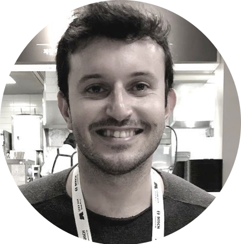
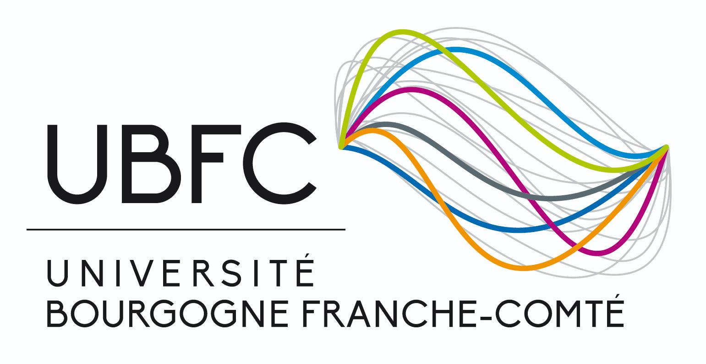

|
|
|
Renato Martins
I am an Assistant Professor (Maître de Conférences) at Université de Bourgogne,
working in CO2M team of the ICB CNRS Laboratory in Dijon. My teaching activies are in the Department
of Robotics (Le Creusot) of the engineering school at the university (ESIREM). I am also an Associate Member of the TANGRAM team at INRIA Nancy/LORIA.
Previously, I was a member of the Artifical Imagery and Vision" - ImViA" laboratory until May 2023. I did my PhD at INRIA Sophia Antipolis/France and at Ecole des Mines de Paris / Université Paris Sciences et Lettres, where I was advised by Dr. Patrick Rives. Then, I was a post-doctoral researcher in the CNRS I3S laboratory, in the ACENTAURI / CHORALE group at INRIA and with the VeRLab laboratory at Universidade Federal de Minas Gerais/Brazil, with whom I maintain tight research collaborations.
My research interests lie in Computer Vision, Machine Learning and Robot Vision, more specifically in the topics of 3D vision, geometric deep learning, human motion analysis, video prediction, and RGB-D image analysis and processing (perspective, omnidirectional).
Publications /
Collaborators /
Software /
Google Scholar /
Contact
|


|
|
Community Service & Reviewing Activities
|
- ICCV 2023, CVPR 2023, AAAI 2023, WACV 2023, IROS 2023, ICRA 2023, RAL 2023, Trans. Robotics 2023, IJCV 2023
- IJCV 2022, ECCV 2022, AAAI 2022, WACV 2022, ICRA 2022, ITSC 2022, IROS 2022, RAL 2022, Trans. Image Processing 2022, Trans. Robotics 2022, Trans. Industrial Informatics 2022, Multimedia Systems 2022, Trans. Multimedia Computing 2022
- 3DV 2021, JVCI 2021, IV 2021, RAL 2021, ICRA 2021, ITSC 2021, JINT 2021, IROS 2021
- ISPRS JPRS 2020, JVCI 2020, JINT 2020, RAL 2020, ICRA 2020, WACV 2020, IV 2020, ITSC 2020
- JVCI 2019, RAL 2019, ICRA 2019, JCAE 2019, IV 2019, ITSC 2019, ICAR 2019
- ISPRS JPRS 2018, IROS 2018, RAL 2018, IV 2018, JVCI 2018, ICCV 2017, ICRA 2017, RAL 2017, ICINCO 2017, IROS 2017
|
|
Enhancing Deformable Local Features by Jointly Learning to Detect and Describe Keypoints
Guilherme Potje, Felipe Cadar, Andre Araujo, Renato Martins, and Erickson R. Nascimento
IEEE/CVF Conference on Computer Vision and Pattern Recognition (CVPR), 2023
arXiv /
project webpage /
bibtex /
github code
This paper proposes a learning-based keypoint detection and description approach to describe images of rigid and non-rigid objects.
Both detection and description of keypoints are learned jointly and they are done simultaneously at test time.
|
|
|
|
Learning to Detect Good Keypoints to Match Non-Rigid Objects in RGB Images
Welerson Melo, Guilherme Potje, Felipe Cadar, Renato Martins, and Erickson R. Nascimento
Conference on Graphics, Patterns and Images (SIBGRAPI), 2022
arXiv /
project webpage /
bibtex /
github code
In this paper, we present a novel detection method for locating confident keypoints on images affected by non-rigid deformations. Our detector learns to locate
keypoints given supervision from visual correspondences, obtained by matching annotated image pairs with a predefined descriptor extractor.
|
|